Horus AIS · Note · novembre 2026
Deux jours au Tech Show Paris
Les 18 et 19 novembre 2026, à Paris Expo Porte de Versailles. Hall 5, Data Centre World, et les salons posés à côté.
Je n’ai pas arpenté les allées pour remplir un tableau. Quelques stands m’ont arrêté. Derrière, toujours la même question : où un service utile peut tenir, en France, sans que la personne à la porte, le courant, le froid ou le lien deviennent le point faible.
Horus AIS ne construit pas ces salles. Horus AIS y déploie ce qui tourne dessus. La visite sert à voir sur quoi ce service peut encore s’appuyer.
La personne à la porte
Avant les mégawatts, il y a quelqu’un qui entre. Badge, mot de passe, empreinte plate : tout cela se copie. Au stand, on me montrait autre chose.
ID4US
Stand C50, Startup Space
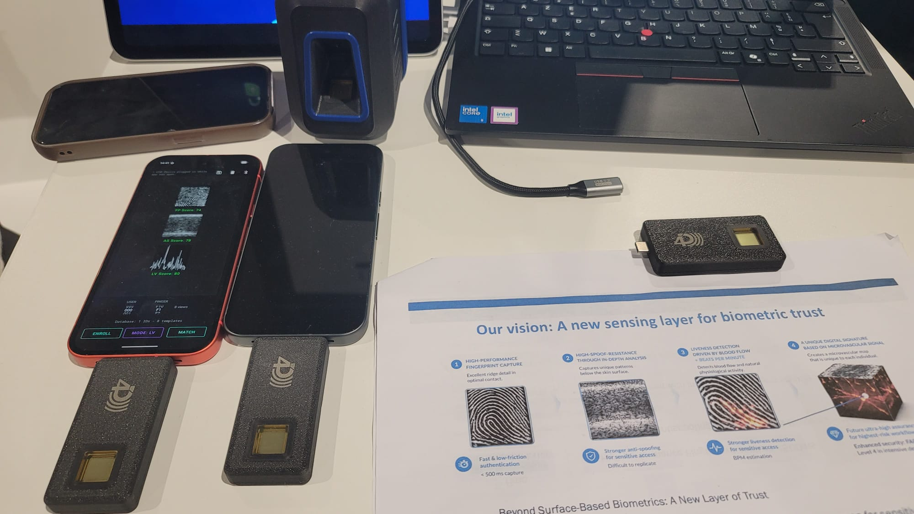
ID4US est à Saint-Martin-d’Hères et à Tours. La démo tient dans un contact. L’ultrason ne s’arrête pas au dessin du doigt : la surface, ce qu’il y a dessous, le sang qui passe, le fin réseau des vaisseaux. L’idée est simple. Un doigt vivant est plus difficile à imiter qu’une image d’empreinte.
- Plateforme de biométrie ultrasonique 4D, fondée en 2022 par Christophe Bernard.
- Certification annoncée FIDO BioLevel 2+, taux de fausse acceptation de l’ordre de 10−6.
- Environ quarante experts, plusieurs dizaines de brevets. Entrée dans French Tech 2030 en octobre 2026, dans le contingent cyber.
- Cibles publiées : accès physique et privilégié, data centers, infrastructures critiques, finance, terminaux de confiance.
Dans une salle où l’on garde des services sous la main, ouvrir une baie ou une console redevient une affaire de physique. Je retiens le sujet. Je le laisse mûrir avant d’en faire une brique.
Le courant et le froid
Le calcul dense chauffe. Au salon, trois réponses différentes : noyer les machines, enfermer les batteries, et tenir le secours quand le réseau lâche.
TotaLinuX / ITrium
Stand K90 · Johan Da Silva
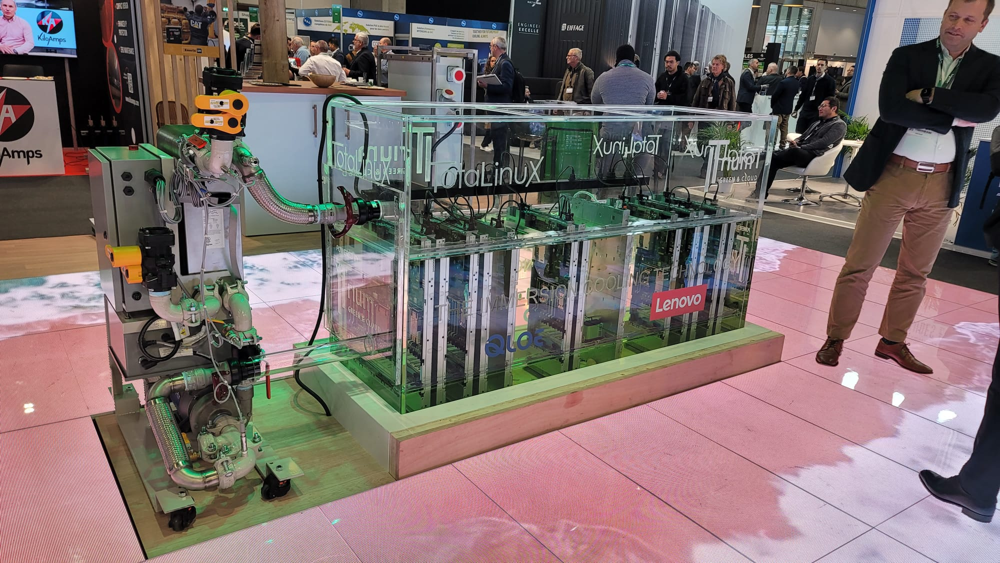
TotaLinuX est à Jouy-en-Josas, intégrateur HPC et cloud hybride depuis 2004. ITrium 1 est leur datacenter en immersion. Les serveurs baignent dans le fluide BioLife de TotalEnergies, aussi nommé Ice Coolant, biosourcé, annoncé pour vingt-cinq ans. La chaleur repart vers le bâtiment, puis vers des immeubles.
- Siège au 2 rue Jean-Baptiste Huet, 78350 Jouy-en-Josas.
- PUE annoncé proche de 1,01, sur la page ITrium Green & Cloud.
- Économie électrique annoncée entre 60 % et 80 %, selon les pages qui en parlent.
- Présenté comme le premier datacenter français de ce type. L’Usine Digitale, février 2025.
Voir un calcul dense tenir dans un fluide, en France, avec la chaleur réemployée, change la conversation avec quelqu’un qui compte les kilowatts. Le lieu, le mode de froid, le réemploi : c’est l’infrastructure qui porte le service. Le bac reste le leur.
Armorgard
Stand H30, Hall 5
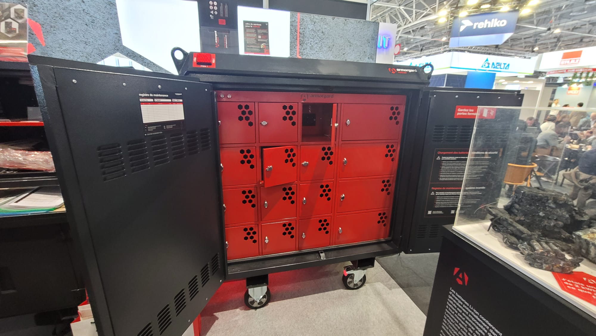
À côté des salles, on charge des batteries sans y penser. Outils, onduleurs mobiles, matériel de maintenance. Armorgard montrait des casiers et une chambre de confinement pour ça. Les fiches décrivent de l’acier thermolaqué.
- VoltHub VH16EU : acier de 1,5 mm, IP55, seize casiers, coupure d’alimentation à 60 °C. Essai Ineris selon la UL 1487.
- Qpod QP1 : chambre compacte d’intérieur, acier thermolaqué, batteries jusqu’à 1,5 kWh.
- Armorgard France est à Loriol-sur-Drôme. Le siège du groupe est à Fareham, au Royaume-Uni.
Un emballement thermique à deux mètres d’une salle n’est pas un détail de quai. Le casier garde le départ de feu dans le volume de charge. Encore de la physique, juste à côté du groupe électrogène et de la fibre.
YUCHAI
Groupe électrogène data center · numéro de stand non confirmé sur une fiche publique
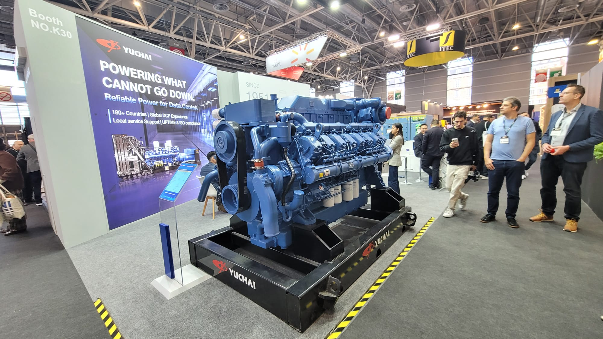
Plus loin, les groupes qui prennent le relais. YUCHAI construit des moteurs et des groupes électrogènes. Le slogan tenu au salon tient en une ligne : alimenter ce qui ne peut pas tomber. Je n’ai pas de numéro de stand public à poser à côté du nom.
- Groupe fondé en 1951 à Yulin, dans le Guangxi. Export annoncé vers plus de 180 pays.
- Série YC16VC publiée pour cet usage : 2 250 à 3 750 kVA, 50 Hz, 1 500 tr/min.
- Puissances prime et secours alignées sur l’ISO 8528. Le régime DCP est celui affiché pour le secours de salle.
Le service s’arrête si le secours ne tient pas la charge. YUCHAI est l’offre de moteurs que j’ai croisée pour ça. Utile à connaître. Pas un groupe que je range dans une proposition.
Le débit
Dès que les machines changent de génération, le lien change avec. Dans la baie d’abord, entre les sites ensuite, puis sur le module qui raccorde les accélérateurs.
Corning
Stand E35
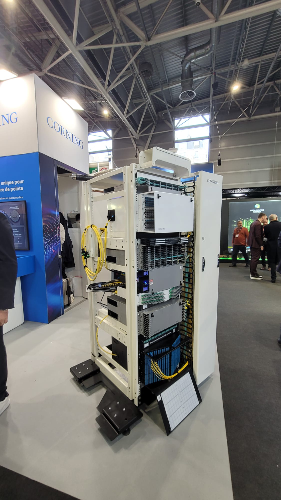
Corning montrait le câblage de la salle, tiroirs compris. Trunks et harness arrivent déjà connectorisés. On parle d’un chemin qui part du 10 Gbit/s et qui est déjà écrit jusqu’au 800 Gbit/s et au 1,6 Tbit/s.
- EDGE8, système préconnectorisé en base 8. Un tiroir 1U monte jusqu’à 96 fibres.
- EDGE et EDGE8 tiennent dans le même rack.
- RocketRibbon pour les liens haute densité, des hyperscales aux salles privées.
- Corning SAS est à Avon. La fiche du salon donne une adresse à Berlin.
La baie fibre est le premier endroit où la densité se voit. Quand le calcul monte, le câblage interne doit suivre sans démonter tout le rack. C’est le lien entre les serveurs et le bâtiment.
Corning Optical Communications Fiche exposant, stand E35
LambdaGain
Stand C40, exposant FONEX
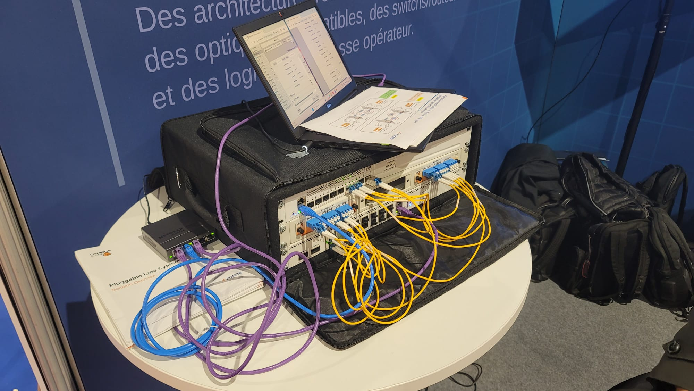
LambdaGain est la division d’optique passive de FONEX. Le siège est à Saint-Laurent, au Québec. L’adresse française de la fiche est à Nozay. Le propos : faire passer plus de débit sur une fibre déjà tirée, et amplifier sans ajouter une baie optique rien que pour la ligne.
- Composants WDM passifs, mux et demux, pour l’accès, le métro et l’interconnexion de salles.
- Pluggable Line System, annoncé en février 2025. L’amplificateur EDFA tient dans un module enfiché dans un port MSA.
- En mai 2025, des composants DWDM LambdaGain sont cités chez Bouygues Telecom, jusqu’à plusieurs voies de 400 Gbit/s.
Entre deux sites qui hébergent des services qu’on veut garder en France, la fibre en place compte autant que la salle. Le passif la multiplie. Le module d’amplification reste dans l’équipement déjà en rack.
lambdagain.com FONEX, division LambdaGain
AERECH / MACROCHIP
AERECH, stand P42 · MACROCHIP, stand H25 sur la fiche exposant
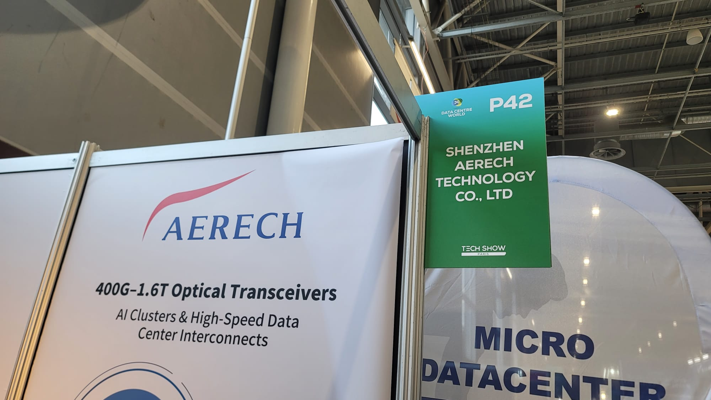
AERECH, à Shenzhen depuis 2015. MACROCHIP, à Quanzhou, qui se présente comme fabricant de puces et de transceivers en silicium photonique. Les deux vendent le lien optique qui raccorde les cartes. Une autre liste du salon place MACROCHIP au A32. Je garde le H25 de la fiche, et le doute avec.
- Catalogue public AERECH : jusqu’au 400G QSFP-DD et au 800G OSFP. Au stand, la conversation allait jusqu’au 1,6T, sans fiche publique aussi détaillée.
- Fiche salon MACROCHIP : 100G à 1,6T. Le site documente surtout 25G à 800G, et annonce des prototypes 1,6T.
- Table 800G OSFP MACROCHIP : SR8 à 100 m, DR8 à 500 m, DR8+ et 2×FR4 à 2 km, de 0 à 70 °C.
L’optique suit les GPU. 400G, puis 800G, puis 1,6T : trois crans du même lien, entre les baies d’un site qui héberge du calcul. Le module n’est pas le service. C’est la contrainte qui arrive avec lui.
Les salles
À un moment, la question quitte le composant. Elle devient : dans quel bâtiment, dans quel département, avec quelle équipe sur place.
NEXEREN
Stand B20, Hall 5
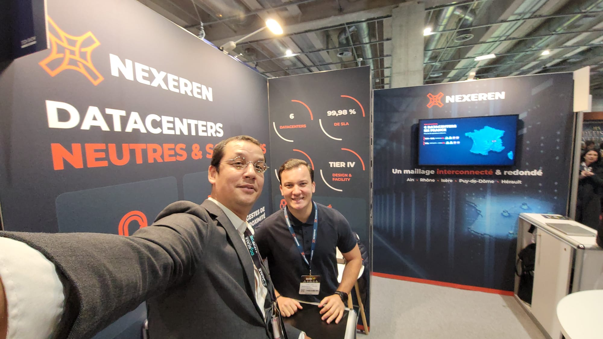
NEXEREN exploite ses salles en France. Filiale du groupe XEFI, siège à Rillieux-la-Pape, société née en 2013 sous le nom SHD. Le mur annonce six datacenters, 99,98 % et le Tier IV. Le site précise le périmètre : la double certification Tier IV porte sur deux sites.
- Six sites : Ain, Rhône, Isère, Puy-de-Dôme, Hérault. Hors du seul hub parisien.
- SLA de 99,98 % affiché au stand et sur le site. Double certification Tier IV Design et Facility sur deux sites, pas sur les six.
- Réseau annoncé en Tier III et Tier IV, avec ISO 27001 et HDS. PUE moyen annoncé de 1,2.
- YTA, à Rillieux-la-Pape, présenté en novembre 2026 comme le sixième datacenter.
La souveraineté dont je parle a une adresse. Une salle allumée, un deuxième site, une équipe qui se déplace, le tout sous droit français. C’est là qu’un service peut physiquement tenir. Horus AIS vient au-dessus.
nexeren.com YTA, ITRnews, 19 novembre 2026
DC2SCALE
Stand D20, Cloud & AI Infrastructure
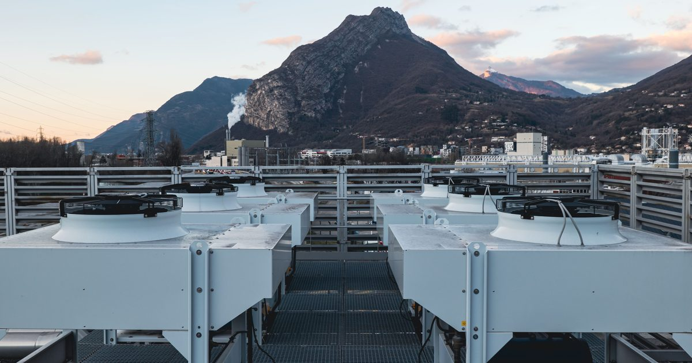
Quelques mètres plus loin, même métier, autre ton. L’équipe au stand était accueillante. Je n’ai pas recopié de panneau. La société se présente comme un opérateur français qui conçoit et exploite ses propres salles.
- dc2scale SAS, 128 rue de la Boétie, 75008 Paris.
- Fiche du salon : colocation de 1 à 100 kW, espace privatif de 100 kW à 1 MW, datacenter dédié au-delà de 1 MW.
- Capitaux français revendiqués. Rien d’autre relevé sur place.
Un clin d’œil, à côté de NEXEREN. Une salle française de plus, des gens faciles à aborder. Pas un hébergement choisi sur un stand.
Sous la dalle
La bonne salle, le bon froid et le bon opérateur tiennent encore à ce qui passe dessous. Électricité, eau, télécom, fibre : une partie du site est enterrée, dans l’enceinte et sur la voie publique.
EJ
Stand G32
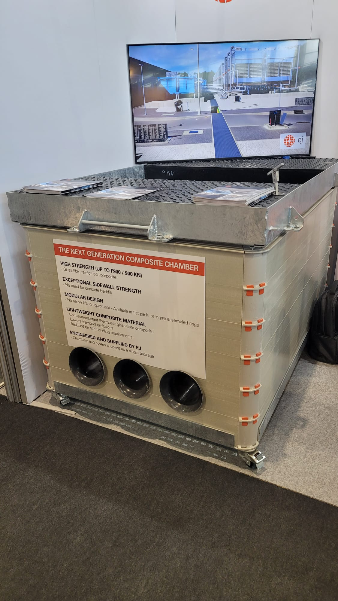
EJ fait les trappes, les tampons et les chambres qui donnent accès aux réseaux enterrés. Groupe familial depuis 1883. Au stand, une chambre composite de nouvelle génération, chambre et couvercles dans le même paquet. Le catalogue en ligne ne décrit pas encore cette pièce-là. Je laisse les deux versions côte à côte.
- Panneau du stand : tenue jusqu’à F900, soit 900 kN, composite renforcé de fibre de verre. Parois porteuses sans remblai béton.
- Montage modulaire, en kit à plat ou en anneaux préassemblés. Composite thermodurcissable, annoncé léger et résistant à la corrosion.
- Siège EMEA à Saint-Crépin-Ibouvillers. Agence française à Chaponnay.
- En ligne, la chambre NEXUS est en polypropylène, testée en D400. Les pièces F900 courantes du catalogue sont en fonte.
Une salle peut être en France, gardée, refroidie, et s’arrêter quand même si la chambre qui porte les fourreaux cède. Je suis reparti avec ça plus qu’avec une référence à commander.
Une piste que je garde
Akash n’exposait pas. Le bac de TotaLinuX, si. Je les rapproche quand même. La question est la même des deux côtés : sortir la chaleur sans y passer tout le courant. Ce n’est pas un produit commun. Aucune page ouverte ne décrit un essai du diamant dans un bac ITrium.
Akash × TotaLinuX × MiTAC
TotaLinuX vu au K90 · Akash absent du salon · le MiTAC cité est un serveur à air
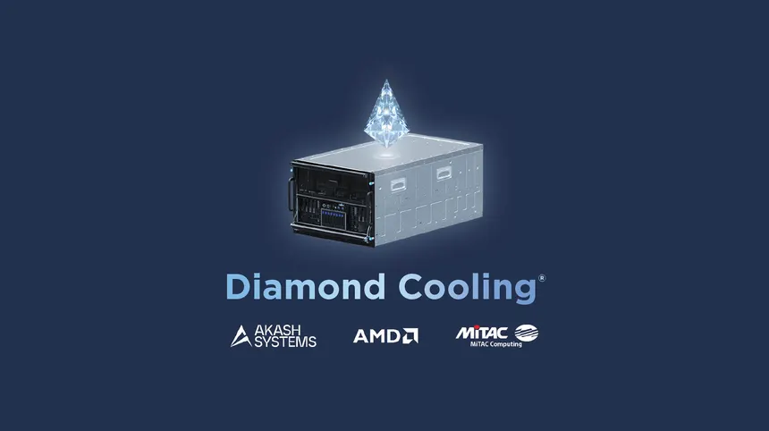
Le diamant est sur la puce. Akash le présente comme une couche en plus de l’air et du liquide. Le bac ITrium, de son côté, noie d’autres machines dans le fluide et renvoie une eau chaude vers le bâtiment. Le serveur dont parle le communiqué Akash du 3 mars 2026, le MiTAC G8825Z5, reste une machine à air : quinze ventilateurs à l’arrière, flux d’air, diamant ajouté sur cette base. Il ne descend pas dans le bac.
- Communiqué du 3 mars 2026, AMD Instinct MI350X : jusqu’à 10 °C de moins sur le GPU et la HBM, jusqu’à 22 % de FLOPs par watt autour de 24 °C, jusqu’à 15 % de débit de tokens autour de 49 °C.
- Deux phrases Akash, deux grandeurs : une évacuation jusqu’à cinq fois plus rapide que le cuivre, et une conductivité annoncée d’au moins 1 500 W/m·K, près de quatre fois le cuivre ou le carbure de silicium.
- Côté ITrium, déjà vu au stand : fluide BioLife, PUE proche de 1,01, chaleur réemployée.
- Le couple diamant plus bac reste une hypothèse. Le G8825Z5 n’est pas le matériel de cette hypothèse.
Le datacenter reste chez celui qui l’exploite. Je déploie le service au-dessus, pour quelqu’un qui veut la salle en France et le moins de kilowatts possible au refroidissement. Rapprocher une puce qui sort sa chaleur et un bac qui la réemploie est une piste de travail. Le G8825Z5, lui, reste à l’air.
Les courbes
En rentrant, j’ai posé deux graphiques de travail à côté de ces stands. Ils ont été générés avec Gemini. Ce sont des lectures, pour voir où la pression monte. Pas des mesures prises au salon, et pas une étude publiée.
Pression sur les ressources, 2024–2040
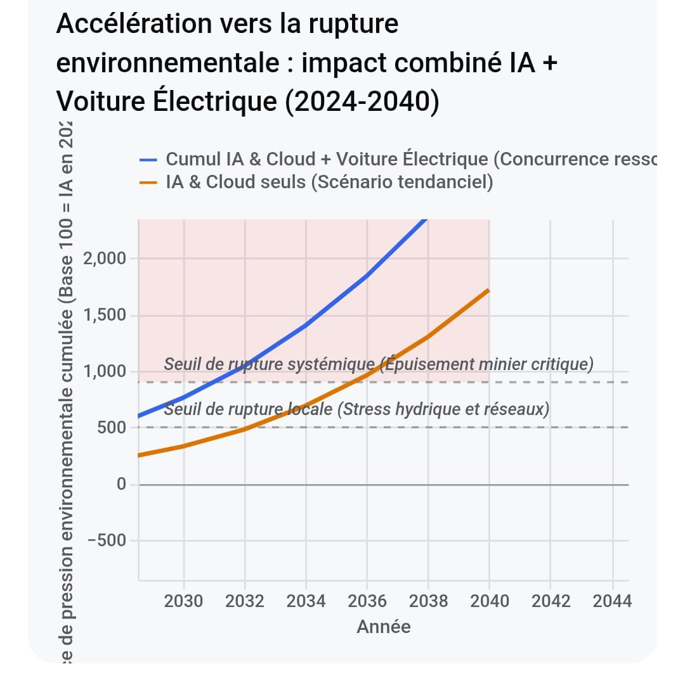
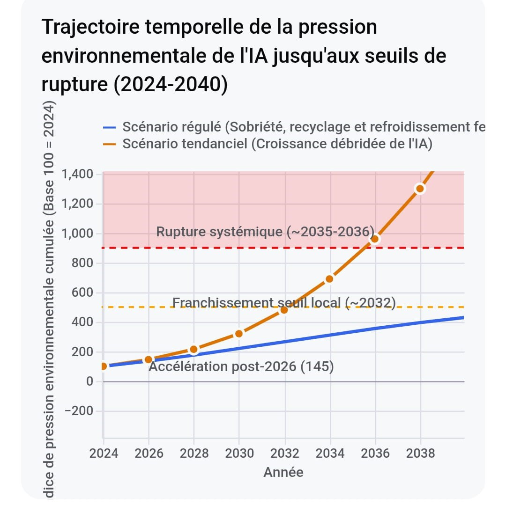
- Sur la première courbe, le cumul IA, cloud et voiture électrique avance de quatre à cinq ans le franchissement des seuils, par rapport à l’IA et au cloud seuls.
- Sur la seconde, l’accélération est placée après 2026. Un seuil local vers 2032, eau et réseaux. Un seuil plus large vers 2035-2036, côté minerais.
- Le scénario plus tenu repose sur trois leviers dessinés sur le graphique : sobriété, recyclage, refroidissement.
Le bac du K90 et le diamant dont parle Akash ne répondent pas à la courbe entière. Ils en déplacent un morceau : le courant dépensé à sortir la chaleur, et le matériel qu’on cesse de faire vieillir trop vite. C’est pour ça que ces stands m’ont arrêté. Le service utile ne tient que si la salle tient encore dans dix ans.
Graphiques de travail générés avec Gemini, 2026.
Merci
Merci aux personnes qui ont pris le temps sur les stands. Johan Da Silva, au bac du K90, et les autres, celles dont je n’ai pas noté le nom et qui ont quand même expliqué.
Un mot aussi pour xAI. L’environnement de travail dans lequel cette veille a été tenue a rendu le tri possible, une fois rentré du salon.
Visite des 18 et 19 novembre 2026, Paris Expo Porte de Versailles. Les chiffres viennent des pages liées. Là où deux pages ne disent pas la même chose, les deux restent.